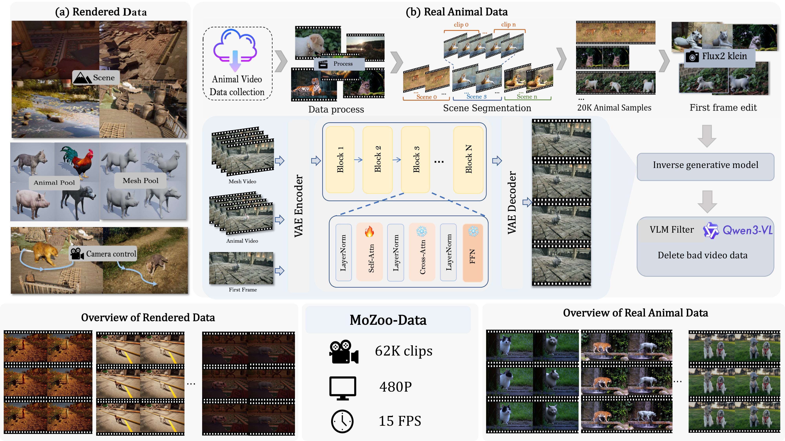
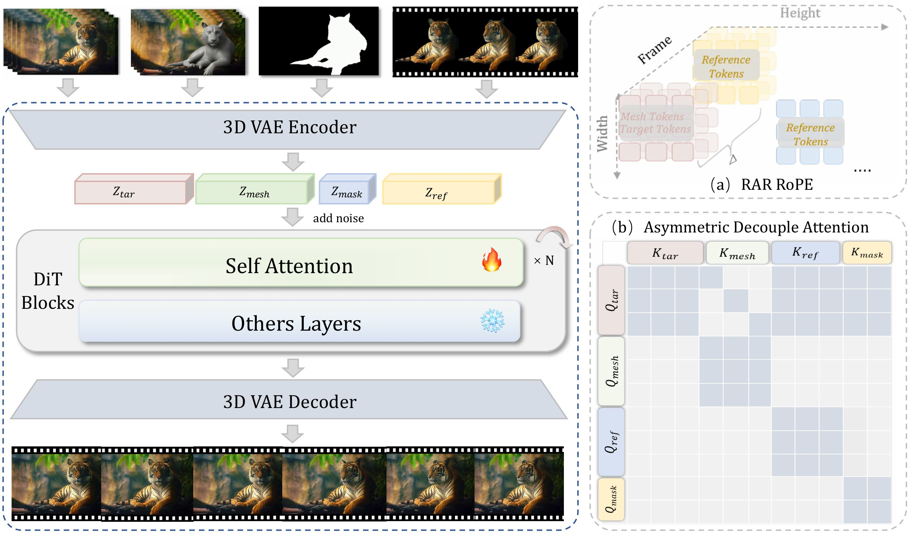

MoZoo
Towards Unleashing Video Diffusion Power in Animal Fur and Muscle Simulation
Getting Started with MoZoo
Abstract
The creation of cinematic-quality animal effects necessitates the precise modeling of muscle and fur dynamics, a process that remains both labor-intensive and computationally expensive within traditional production workflows. While generative diffusion models have shown promise in diverse artistic workflows, their capacity for high-fidelity animal simulation remains largely unexploited. We present MoZoo, a generative dynamics solver that bypasses conventional refinement to synthesize high-fidelity animal videos from coarse meshes under multimodal guidance. We propose Role-Aware RoPE (RAR-RoPE) which employs role-based index remapping to synchronize motion alignment while decoupling reference information via fixed temporal offsets. Complementing this, Asymmetric Decoupled Attention partitions the latent sequence to enforce a unidirectional information flow, effectively preventing feature interference and improving computational efficiency. To address the scarcity of high-quality training data, we introduce MoZoo-Data, a synthetic-to-real pipeline that leverages a rendering engine and an inverse mapping approach to construct a large-scale dataset of paired sequences. Furthermore, we establish MoZooBench, a comprehensive benchmark with 120 mesh-video pairs. Experimental results demonstrate that MoZoo achieves high-fidelity fur simulation across diverse animal skeletons and layouts, preserving superior temporal and structural consistency.
MoZoo-Data Generation Pipeline

Rendered (UE5)
UE5-based pipeline for bit-perfect alignment between textureless meshes (Vmesh) and photorealistic targets, enabling localized texture learning.
Real-world Pairs
Bridging domain gaps by converting Pexels videos into paired sequences via Flux2 Klein editing and inverse mesh generation.
Filtering & Stats
Quality control via SAM 3 and Qwen3-VL, curating 62K clips (480P, 15 FPS) with strict temporal and structural consistency.
Diverse Dataset Samples
The first column is UE rendering data, the rest are real animal data.
Experimental Results
MoZoo supports multimodal guidance for high fidelity animal fur synthesis.
"Render the gray-mesh animal in the video as real elephant."
"Render the gray-mesh animal in the video as real panda."
"Render the gray-mesh animal in the video as real tiger."
"Render the gray-mesh animal in the video as real chimpanzee."
"Render the gray-mesh animal in the video as real lion."
"Render the gray-mesh animal in the video as real tiger."
"Render the gray-mesh animal in the video as real dog."
"Render the gray-mesh animal in the video as real hamster."


.png)
.png)
.png)
Methodology

Pipeline of the MoZoo Framework. (a) RAR Rope for target, mesh, and reference tokens. (b) The restricted attention matrix regulates information exchange among different latent components to maintain structural and appearance fidelity during the generation process.
Ethical Considerations
The reference images and videos used in this webpage are sourced from public domains or generated by AI, and are intended solely to demonstrate the capabilities of this research. If there are any concerns regarding the content or requests for removal, please contact us,
BibTeX
@misc{liu2024mozoo,
title={MoZoo: Towards Unleashing Video Diffusion Power in Animal Fur and Muscle Simulation},
author={Dongxia Liu and Jie Ma and Xiaochen Yang and Jiancheng Zhang and Bin Xia and Zhehan Kan and Nisha Huang and Jun Liang and Wenming Yang and Jing Li},
year={2026},
howpublished={Unpublished manuscript}
}